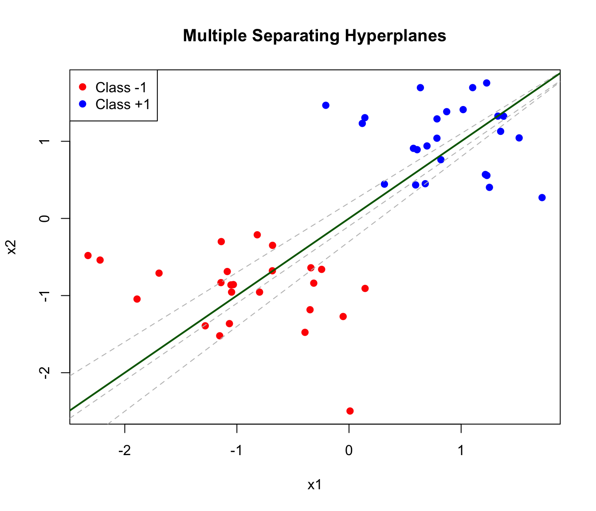
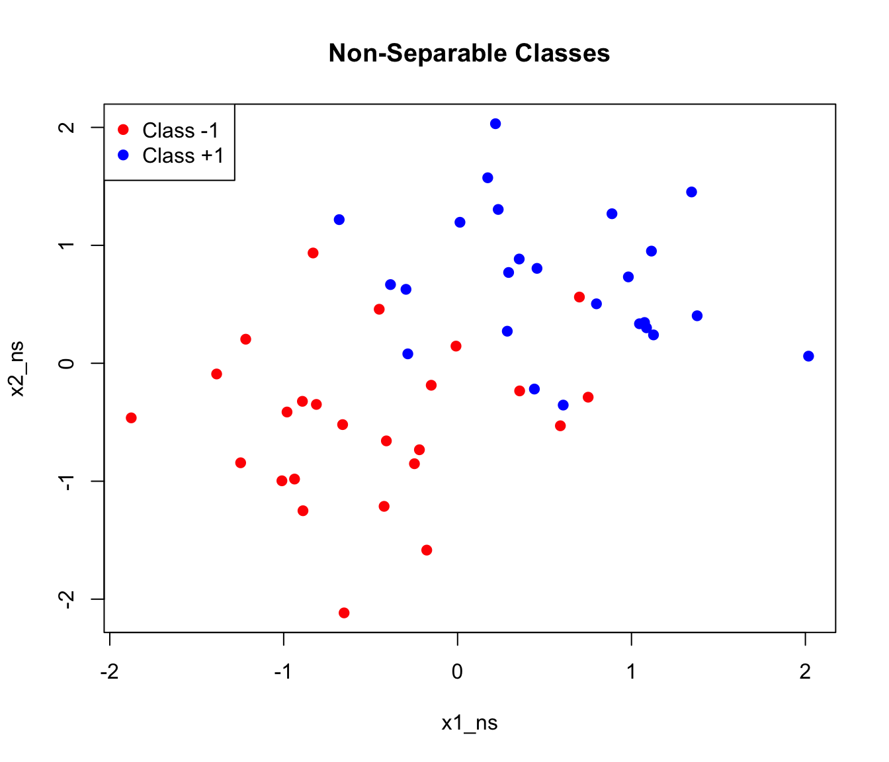
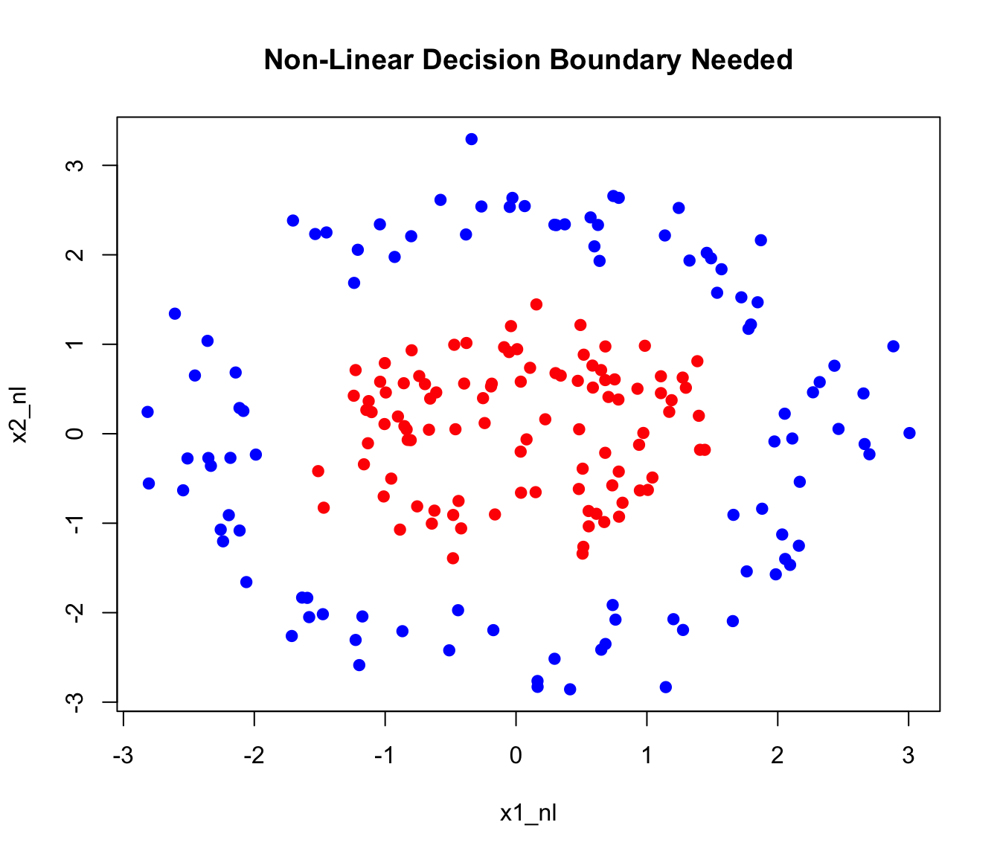
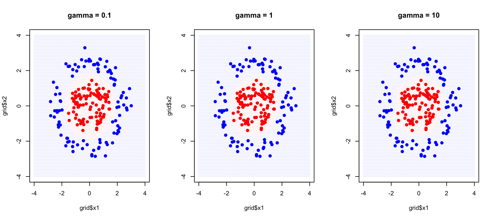
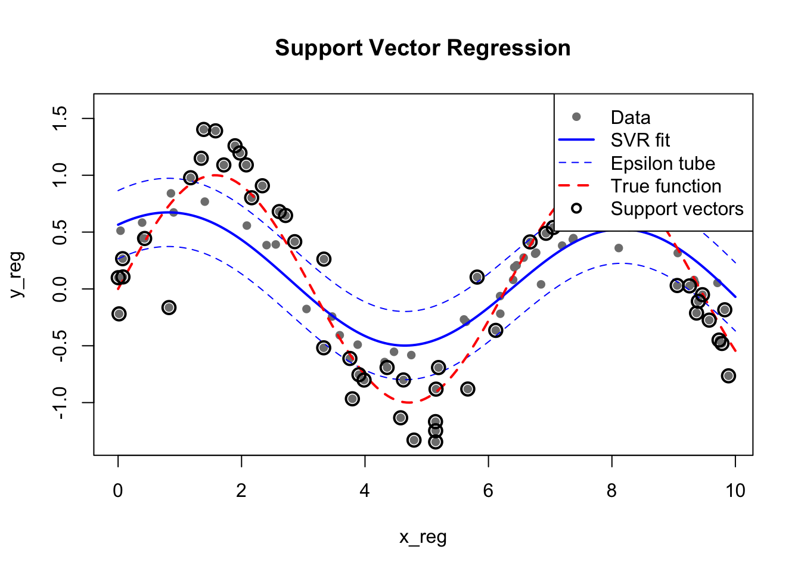

Error in `library()`:
! there is no package called 'kernlab'35 Support Vector Machines
35.1 Introduction to Support Vector Machines
Support Vector Machines (SVMs) are powerful supervised learning algorithms that excel at classification tasks, particularly when decision boundaries are complex. SVMs work by finding the optimal hyperplane that separates classes with the maximum margin.
SVMs were developed by Vladimir Vapnik and colleagues in the 1990s and quickly became one of the most popular machine learning methods before the rise of deep learning. They remain valuable tools today, particularly for problems with many features relative to samples, where their maximum margin principle helps prevent overfitting. They work well on small to medium-sized datasets where deep learning would lack sufficient data, and they are often preferred in applications requiring robust generalization with limited tuning. In biology, SVMs have been particularly successful for sequence classification—predicting protein structure or function from amino acid sequences, identifying splice sites in genes, or classifying regulatory elements in DNA.
35.2 The Maximum Margin Classifier
Separating Hyperplanes
Consider a simple two-class classification problem with two features. If the classes are linearly separable—they can be perfectly separated by a straight line (or hyperplane in higher dimensions)—there are infinitely many possible separating lines.
Code
# Generate linearly separable data
set.seed(42)
n <- 50
x1 <- c(rnorm(n/2, -1, 0.5), rnorm(n/2, 1, 0.5))
x2 <- c(rnorm(n/2, -1, 0.5), rnorm(n/2, 1, 0.5))
y <- factor(c(rep(-1, n/2), rep(1, n/2)))
data_sep <- data.frame(x1 = x1, x2 = x2, y = y)
plot(x1, x2, col = c("red", "blue")[as.numeric(y)], pch = 19,
main = "Multiple Separating Hyperplanes")
# Several possible separating lines
abline(-0.1, 1, lty = 2, col = "gray")
abline(0.2, 0.9, lty = 2, col = "gray")
abline(-0.3, 1.1, lty = 2, col = "gray")
abline(0, 1, lwd = 2, col = "darkgreen") # Best one
legend("topleft", c("Class -1", "Class +1"),
col = c("red", "blue"), pch = 19)

The Margin
The maximum margin classifier chooses the hyperplane that maximizes the distance to the nearest points from either class. This distance is called the margin.
A hyperplane in \(p\) dimensions is defined by: \[\beta_0 + \beta_1 X_1 + \beta_2 X_2 + \cdots + \beta_p X_p = 0\]
For a new observation \(x^*\), we classify based on which side of the hyperplane it falls: \[\text{sign}(\beta_0 + \beta_1 x_1^* + \beta_2 x_2^* + \cdots + \beta_p x_p^*) = \pm 1\]
Code
# Fit SVM (linear kernel)
library(e1071)
svm_fit <- svm(y ~ x1 + x2, data = data_sep, kernel = "linear", scale = FALSE)
# Plot
plot(x1, x2, col = c("red", "blue")[as.numeric(y)], pch = 19,
main = "Maximum Margin Classifier")
# Extract coefficients
w <- t(svm_fit$coefs) %*% svm_fit$SV
b <- -svm_fit$rho
# Decision boundary
abline(-b/w[2], -w[1]/w[2], lwd = 2)
# Margins
abline((-b-1)/w[2], -w[1]/w[2], lty = 2)
abline((-b+1)/w[2], -w[1]/w[2], lty = 2)
# Highlight support vectors
points(svm_fit$SV, col = "black", cex = 2, lwd = 2)
legend("topleft", c("Class -1", "Class +1", "Support Vectors"),
col = c("red", "blue", "black"), pch = c(19, 19, 1), pt.cex = c(1, 1, 2))
Support Vectors
The observations that lie exactly on the margin boundary are called support vectors. These points “support” the hyperplane—if they were moved, the optimal hyperplane would change. Points farther from the margin have no effect on the solution.
This property has important practical implications. SVMs are sparse in the sense that only support vectors matter for prediction—the model can discard all other training points without affecting its predictions. This makes SVMs efficient at prediction time, since classification depends only on distances to the support vectors rather than to all training observations. And it makes SVMs robust to outliers that are far from the decision boundary, since such points don’t influence the model at all.
35.3 The Support Vector Classifier (Soft Margin)
Real data is rarely perfectly separable. The support vector classifier (soft margin SVM) allows some violations of the margin:
Code
# Generate non-separable data
set.seed(123)
x1_ns <- c(rnorm(n/2, -0.5, 0.7), rnorm(n/2, 0.5, 0.7))
x2_ns <- c(rnorm(n/2, -0.5, 0.7), rnorm(n/2, 0.5, 0.7))
data_ns <- data.frame(x1 = x1_ns, x2 = x2_ns, y = y)
plot(x1_ns, x2_ns, col = c("red", "blue")[as.numeric(y)], pch = 19,
main = "Non-Separable Classes")
legend("topleft", c("Class -1", "Class +1"), col = c("red", "blue"), pch = 19)

The soft margin formulation introduces slack variables \(\xi_i\) that allow points to violate the margin:
\[\text{Minimize: } \frac{1}{2}||\beta||^2 + C \sum_{i=1}^n \xi_i\]
subject to: \[y_i(\beta_0 + \beta^T x_i) \geq 1 - \xi_i, \quad \xi_i \geq 0\]
The Cost Parameter C
The parameter C controls the tradeoff between margin width and the number of violations allowed.
When C is large, the penalty for violations is high, so the algorithm tries hard to classify all training points correctly. This typically produces a narrow margin with few violations, but risks overfitting to noise in the training data. When C is small, violations are tolerated more easily, resulting in a wider margin that may misclassify some training points. This trades off training accuracy for a simpler decision boundary that often generalizes better to new data.
Code
par(mfrow = c(1, 3))
for (C_val in c(0.1, 1, 100)) {
svm_c <- svm(y ~ x1 + x2, data = data_ns, kernel = "linear",
cost = C_val, scale = FALSE)
plot(x1_ns, x2_ns, col = c("red", "blue")[as.numeric(y)], pch = 19,
main = paste("C =", C_val))
# Decision boundary
w <- t(svm_c$coefs) %*% svm_c$SV
b <- -svm_c$rho
abline(-b/w[2], -w[1]/w[2], lwd = 2)
# Support vectors
points(svm_c$SV, col = "black", cex = 1.5, lwd = 2)
text(0, 2, paste(nrow(svm_c$SV), "SVs"), cex = 0.8)
}
As C decreases, more support vectors are used and the margin widens. This is another manifestation of the bias-variance tradeoff.
35.4 The Kernel Trick: Non-Linear SVMs
Linear boundaries are often insufficient. The kernel trick allows SVMs to learn non-linear decision boundaries by implicitly mapping data to higher-dimensional space.
Why Kernels?
Consider data that’s not linearly separable:
Code
# Generate data requiring non-linear boundary
set.seed(42)
n <- 200
r1 <- rnorm(n/2, 1, 0.3)
r2 <- rnorm(n/2, 2.5, 0.3)
theta <- runif(n, 0, 2*pi)
x1_nl <- c(r1 * cos(theta[1:(n/2)]), r2 * cos(theta[(n/2+1):n]))
x2_nl <- c(r1 * sin(theta[1:(n/2)]), r2 * sin(theta[(n/2+1):n]))
y_nl <- factor(c(rep(-1, n/2), rep(1, n/2)))
data_nl <- data.frame(x1 = x1_nl, x2 = x2_nl, y = y_nl)
plot(x1_nl, x2_nl, col = c("red", "blue")[as.numeric(y_nl)], pch = 19,
main = "Non-Linear Decision Boundary Needed")

A linear SVM fails on this data. But if we map to a higher-dimensional space using features like \(x_1^2\), \(x_2^2\), \(x_1 x_2\), the classes might become linearly separable.
Common Kernels
The Linear Kernel, \(K(x_i, x_j) = x_i^T x_j\), is equivalent to the standard support vector classifier with no transformation—it finds linear decision boundaries in the original feature space.
The Polynomial Kernel, \(K(x_i, x_j) = (1 + x_i^T x_j)^d\), creates polynomial decision boundaries of degree \(d\). This allows curved boundaries while still having a clear interpretation in terms of polynomial features.
The Radial Basis Function (RBF) Kernel, also called the Gaussian kernel, is defined as \(K(x_i, x_j) = \exp(-\gamma ||x_i - x_j||^2)\). It creates flexible, localized decision boundaries and is the most commonly used kernel for non-linear problems. The parameter \(\gamma\) controls the influence radius of each training point—larger values of \(\gamma\) mean that each point influences only its immediate neighborhood, while smaller values create smoother boundaries where each point influences a wider region.
The Sigmoid Kernel, \(K(x_i, x_j) = \tanh(\gamma x_i^T x_j + r)\), mimics neural network activation functions and is occasionally used when you want to relate SVMs to neural networks. However, it is not a valid kernel for all parameter values and is less commonly used than the others.
Code
# Create grid for visualization
x1_seq <- seq(-4, 4, length.out = 100)
x2_seq <- seq(-4, 4, length.out = 100)
grid <- expand.grid(x1 = x1_seq, x2 = x2_seq)
par(mfrow = c(1, 3))
# Linear kernel
svm_linear <- svm(y ~ x1 + x2, data = data_nl, kernel = "linear")
grid$pred <- predict(svm_linear, grid)
plot(grid$x1, grid$x2,
col = c(rgb(1,0,0,0.1), rgb(0,0,1,0.1))[as.numeric(grid$pred)],
pch = 15, cex = 0.3, main = "Linear Kernel")
points(x1_nl, x2_nl, col = c("red", "blue")[as.numeric(y_nl)], pch = 19)
# Polynomial kernel
svm_poly <- svm(y ~ x1 + x2, data = data_nl, kernel = "polynomial", degree = 2)
grid$pred <- predict(svm_poly, grid)
plot(grid$x1, grid$x2,
col = c(rgb(1,0,0,0.1), rgb(0,0,1,0.1))[as.numeric(grid$pred)],
pch = 15, cex = 0.3, main = "Polynomial Kernel (d=2)")
points(x1_nl, x2_nl, col = c("red", "blue")[as.numeric(y_nl)], pch = 19)
# RBF kernel
svm_rbf <- svm(y ~ x1 + x2, data = data_nl, kernel = "radial", gamma = 0.5)
grid$pred <- predict(svm_rbf, grid)
plot(grid$x1, grid$x2,
col = c(rgb(1,0,0,0.1), rgb(0,0,1,0.1))[as.numeric(grid$pred)],
pch = 15, cex = 0.3, main = "RBF Kernel")
points(x1_nl, x2_nl, col = c("red", "blue")[as.numeric(y_nl)], pch = 19)
The RBF kernel successfully captures the circular decision boundary.
Tuning the RBF Kernel
The RBF kernel has two parameters that must be tuned together. The cost parameter C controls margin violations as before—how much the algorithm penalizes misclassifications. The gamma parameter (\(\gamma\)) controls the kernel width, determining how far the influence of a single training example reaches.
Code
par(mfrow = c(1, 3))
for (gamma_val in c(0.1, 1, 10)) {
svm_g <- svm(y ~ x1 + x2, data = data_nl, kernel = "radial",
gamma = gamma_val, cost = 1)
grid$pred <- predict(svm_g, grid)
plot(grid$x1, grid$x2,
col = c(rgb(1,0,0,0.1), rgb(0,0,1,0.1))[as.numeric(grid$pred)],
pch = 15, cex = 0.3, main = paste("gamma =", gamma_val))
points(x1_nl, x2_nl, col = c("red", "blue")[as.numeric(y_nl)], pch = 19)
}

With small gamma, each training point has a wide influence, creating smooth decision boundaries. This corresponds to high bias but low variance—the model may be too simple but is stable across different training samples. With large gamma, each training point only affects its immediate neighborhood, allowing complex, highly curved boundaries. This corresponds to low bias but high variance—the model can capture intricate patterns but may overfit to the specific training sample.
Cross-Validation for Parameter Selection
Code
# Grid search with cross-validation
set.seed(42)
tune_result <- tune(svm, y ~ x1 + x2, data = data_nl,
kernel = "radial",
ranges = list(
cost = c(0.1, 1, 10, 100),
gamma = c(0.1, 0.5, 1, 2)
))
# Best parameters
print(tune_result$best.parameters) cost gamma
2 1 0.1Code
cat("\nBest cross-validation error:", round(tune_result$best.performance, 4), "\n")
Best cross-validation error: 0 Code
# Summary of all models
summary(tune_result)
Parameter tuning of 'svm':
- sampling method: 10-fold cross validation
- best parameters:
cost gamma
1 0.1
- best performance: 0
- Detailed performance results:
cost gamma error dispersion
1 0.1 0.1 0.345 0.15890249
2 1.0 0.1 0.000 0.00000000
3 10.0 0.1 0.000 0.00000000
4 100.0 0.1 0.000 0.00000000
5 0.1 0.5 0.005 0.01581139
6 1.0 0.5 0.000 0.00000000
7 10.0 0.5 0.000 0.00000000
8 100.0 0.5 0.000 0.00000000
9 0.1 1.0 0.005 0.01581139
10 1.0 1.0 0.000 0.00000000
11 10.0 1.0 0.000 0.00000000
12 100.0 1.0 0.000 0.00000000
13 0.1 2.0 0.010 0.02108185
14 1.0 2.0 0.000 0.00000000
15 10.0 2.0 0.000 0.00000000
16 100.0 2.0 0.000 0.0000000035.5 Multi-Class SVMs
SVMs are naturally binary classifiers. For multi-class problems, two strategies are common:
One-vs-One (OvO): Train \(\binom{K}{2}\) classifiers for each pair of classes. Predict by majority voting.
One-vs-All (OvA): Train \(K\) classifiers, each separating one class from all others. Predict based on highest confidence.
Code
# Multi-class SVM on iris
data(iris)
svm_iris <- svm(Species ~ Petal.Length + Petal.Width, data = iris,
kernel = "radial", gamma = 0.5, cost = 1)
# Create grid
pl_seq <- seq(0, 7, length.out = 100)
pw_seq <- seq(0, 3, length.out = 100)
grid_iris <- expand.grid(Petal.Length = pl_seq, Petal.Width = pw_seq)
grid_iris$pred <- predict(svm_iris, grid_iris)
# Plot
plot(grid_iris$Petal.Length, grid_iris$Petal.Width,
col = c(rgb(1,0,0,0.1), rgb(0,1,0,0.1), rgb(0,0,1,0.1))[grid_iris$pred],
pch = 15, cex = 0.3,
xlab = "Petal Length", ylab = "Petal Width",
main = "Multi-Class SVM on Iris Data")
points(iris$Petal.Length, iris$Petal.Width,
col = c("red", "green", "blue")[iris$Species], pch = 19)
legend("topleft", levels(iris$Species),
col = c("red", "green", "blue"), pch = 19)
# Confusion matrix
pred_iris <- predict(svm_iris, iris)
table(Predicted = pred_iris, Actual = iris$Species) Actual
Predicted setosa versicolor virginica
setosa 50 0 0
versicolor 0 47 3
virginica 0 3 47
35.6 Support Vector Regression (SVR)
SVMs can be extended to regression problems. Support Vector Regression (SVR) fits a tube of width \(\epsilon\) around the data, ignoring errors within the tube:
Code
# Generate regression data
set.seed(42)
n <- 100
x_reg <- sort(runif(n, 0, 10))
y_reg <- sin(x_reg) + rnorm(n, sd = 0.3)
data_reg <- data.frame(x = x_reg, y = y_reg)
# Fit SVR
svr_fit <- svm(y ~ x, data = data_reg, type = "eps-regression",
kernel = "radial", gamma = 0.5, epsilon = 0.3)
# Predictions
x_grid <- seq(0, 10, length.out = 200)
y_pred <- predict(svr_fit, newdata = data.frame(x = x_grid))
# Plot
plot(x_reg, y_reg, pch = 16, col = "gray50",
main = "Support Vector Regression")
lines(x_grid, y_pred, col = "blue", lwd = 2)
lines(x_grid, y_pred + 0.3, col = "blue", lty = 2) # Epsilon tube
lines(x_grid, y_pred - 0.3, col = "blue", lty = 2)
lines(x_grid, sin(x_grid), col = "red", lwd = 2, lty = 2)
# Highlight support vectors
sv_idx <- svr_fit$index
points(x_reg[sv_idx], y_reg[sv_idx], col = "black", cex = 1.5, lwd = 2)
legend("topright", c("Data", "SVR fit", "Epsilon tube", "True function", "Support vectors"),
col = c("gray50", "blue", "blue", "red", "black"),
pch = c(16, NA, NA, NA, 1), lty = c(NA, 1, 2, 2, NA), lwd = c(1, 2, 1, 2, 2))

35.7 Practical Considerations
Feature Scaling
SVMs are sensitive to feature scales. Always standardize features before training:
Code
# With scaling (default)
svm_scaled <- svm(Species ~ ., data = iris, scale = TRUE)
# Without scaling (not recommended)
# svm_unscaled <- svm(Species ~ ., data = iris, scale = FALSE)Probability Estimates
By default, SVMs output only class predictions. However, you can obtain probability estimates using Platt scaling, which fits a sigmoid function to the decision values:
Code
# Train SVM with probability estimates enabled
svm_prob <- svm(Species ~ ., data = iris,
kernel = "radial",
probability = TRUE)
# Predict with probabilities
pred_prob <- predict(svm_prob, iris, probability = TRUE)
# Extract probability matrix
probs <- attr(pred_prob, "probabilities")
head(probs) setosa versicolor virginica
1 0.9808043 0.01091925 0.008276452
2 0.9736294 0.01750091 0.008869655
3 0.9795448 0.01152417 0.008931067
4 0.9756104 0.01480310 0.009586477
5 0.9799921 0.01123496 0.008772975
6 0.9746892 0.01620451 0.009106251Platt scaling works by fitting a logistic regression model to the SVM’s decision values after training. While this provides calibrated probabilities, it adds computational overhead and may be less reliable when training data is limited. For applications requiring well-calibrated probabilities (such as medical diagnosis where you need to communicate uncertainty), consider whether logistic regression or other natively probabilistic methods might be more appropriate.
Decision Values
For more detailed analysis, you can extract the raw decision values—the signed distances from the decision boundary:
Code
# Get decision values
pred_dv <- predict(svm_prob, iris, decision.values = TRUE)
decision_vals <- attr(pred_dv, "decision.values")
head(decision_vals) setosa/versicolor setosa/virginica versicolor/virginica
1 1.196203 1.091460 0.6709454
2 1.064664 1.056332 0.8485954
3 1.180892 1.074534 0.6441745
4 1.110746 1.053143 0.6784462
5 1.185382 1.093964 0.5587731
6 1.081216 1.094082 0.5537525For a two-class problem, the decision value represents how far and on which side of the hyperplane an observation lies. Larger absolute values indicate higher confidence in the classification. For multi-class problems using one-vs-one classification, you get decision values for each pair of classes.
Choosing the Kernel
Kernel Selection Guidelines
The choice of kernel depends on your data and prior knowledge about the problem.
Start with the RBF kernel as a sensible default—it handles most non-linear problems well and has the flexibility to approximate a wide range of decision boundaries. However, try a linear kernel first if you have many features relative to samples, as the data may already be linearly separable in the high-dimensional feature space without needing additional transformation. Linear kernels are also faster to train and easier to interpret.
Polynomial kernels are useful when you have domain knowledge suggesting polynomial relationships—for instance, when interactions between features are expected to matter. Custom kernels allow you to encode domain-specific knowledge; string kernels for biological sequences, for example, measure similarity based on shared subsequences rather than Euclidean distance.
Advantages and Limitations
SVMs have several important advantages. They are effective in high-dimensional spaces, often working well even when the number of features exceeds the number of samples. They are memory efficient because the final model depends only on the support vectors, not all training observations. They are versatile through the choice of kernel, allowing them to learn complex non-linear boundaries. And the maximum margin principle provides a form of regularization that often leads to good generalization.
However, SVMs also have significant limitations. Training time scales as \(O(n^2)\) to \(O(n^3)\) with the number of observations, making them impractical for very large datasets. They are sensitive to feature scaling—variables must be standardized before training. They do not naturally provide probability estimates (though these can be obtained through additional computation). And selecting the appropriate kernel and tuning the parameters requires care, often necessitating extensive cross-validation.
Comparison with Other Methods
How do SVMs compare to other classification methods? Each approach has different strengths:
| Aspect | SVM | Random Forest | Logistic Regression | Neural Networks |
|---|---|---|---|---|
| Interpretability | Low (except linear) | Medium (variable importance) | High (coefficients) | Low |
| Probability estimates | Requires Platt scaling | Natural (vote proportions) | Natural | Natural (softmax) |
| High dimensions | Excellent | Good | Good with regularization | Needs many samples |
| Non-linear boundaries | Via kernels | Natural | Needs feature engineering | Natural |
| Training speed | Slow for large n | Fast (parallelizable) | Very fast | Slow |
| Hyperparameters | C, kernel params | Trees, depth, features | Regularization | Many (architecture) |
| Robustness to noise | Moderate | Excellent | Moderate | Sensitive |
Choose SVMs when you have limited samples, many features, and need good generalization. Choose Random Forests when you need variable importance, robustness, or have many observations. Choose Logistic Regression when interpretability is paramount and relationships are approximately linear. Choose Neural Networks when you have massive data and complex patterns to capture.
Feature Importance
Unlike random forests, SVMs don’t provide built-in variable importance measures. However, several approaches can help interpret which features matter:
For linear SVMs, the magnitude of the weight coefficients indicates feature importance:
Code
# Fit linear SVM
svm_linear_iris <- svm(Species ~ ., data = iris, kernel = "linear", scale = TRUE)
# Extract weights (for binary classification)
# For multi-class, examine each one-vs-one classifier
# Here we use a simpler 2-class example
iris_binary <- iris[iris$Species != "setosa",]
iris_binary$Species <- droplevels(iris_binary$Species)
svm_binary <- svm(Species ~ ., data = iris_binary, kernel = "linear", scale = TRUE)
w <- t(svm_binary$coefs) %*% svm_binary$SV
cat("Feature weights (absolute values indicate importance):\n")Feature weights (absolute values indicate importance):Code
print(abs(w)) Sepal.Length Sepal.Width Petal.Length Petal.Width
[1,] 0.3735423 0.5227155 1.599519 1.626847For non-linear SVMs, permutation importance provides a model-agnostic approach—shuffle each feature and measure the decrease in accuracy. Alternatively, you can examine which features have the most support vectors in high-density regions.
Scaling for Large Datasets
Standard SVM implementations struggle with large datasets due to their \(O(n^2)\) to \(O(n^3)\) training complexity. For datasets with many observations, consider these alternatives.
The LiblineaR package implements linear SVMs that scale to millions of observations. It uses a coordinate descent algorithm that is much faster than the standard quadratic programming approach:
Code
library(LiblineaR)
# Much faster for large datasets with linear kernel
model <- LiblineaR(data = X_train, target = y_train, type = 1)Stochastic gradient descent approaches approximate the SVM solution by processing data in batches, making them suitable for online learning and very large datasets.
For kernel SVMs on large data, random Fourier features or Nyström approximation can approximate the kernel mapping, allowing linear methods to be applied to the transformed features.
35.8 Exercises
Exercise SVM.1: Linear SVM
Generate linearly separable data in two dimensions. Fit an SVM with a linear kernel.
Identify the support vectors. How many are there?
Add noise to make the classes overlap. How does the number of support vectors change with different values of C?
Exercise SVM.2: Non-Linear Classification
Generate data that requires a non-linear decision boundary (e.g., circles or moons).
Fit SVMs with polynomial and RBF kernels. Compare performance.
Use cross-validation to select optimal parameters (C, gamma or degree).
Exercise SVM.3: Real Data
Load the
tissue_gene_expressiondataset. Use SVM to classify tissue types.Compare linear and RBF kernels. Which performs better?
How does SVM compare to random forests on this data?
35.9 Summary
This chapter introduced Support Vector Machines, a powerful class of algorithms that find optimal separating hyperplanes with maximum margin. The fundamental idea is to choose the decision boundary that is as far as possible from the nearest training points of each class.
Support vectors are the training points that lie on the margin boundary and determine the decision boundary. All other points are irrelevant to the model, making SVMs sparse and efficient at prediction time. The cost parameter C controls the tradeoff between margin width and the number of violations allowed—larger C means fewer violations but risks overfitting.
The kernel trick extends SVMs to non-linear decision boundaries by implicitly mapping data to higher-dimensional spaces. The linear kernel corresponds to the standard support vector classifier. The polynomial kernel creates polynomial boundaries of specified degree. The RBF (radial basis function) kernel is the most commonly used choice for non-linear problems, creating flexible, localized decision boundaries. The gamma parameter (\(\gamma\)) controls the RBF kernel width—larger values produce more complex boundaries with higher variance.
Cross-validation is essential for selecting the parameters C and gamma, since both substantially affect model performance. SVMs extend naturally to multi-class problems through one-vs-one or one-vs-all strategies, and to regression through Support Vector Regression (SVR). Feature scaling is required before training because SVMs are sensitive to the relative scales of different variables. While SVMs work remarkably well in high dimensions, their training time scales poorly with the number of observations, limiting their applicability to very large datasets.